Project 2: Fun with Filters and Frequencies
Intro
CS180 Project 2 — convolution, edge detection, Gaussian/DoG filters, image sharpening, hybrid images, and multiresolution blending.
Part 1: Fun with Filters
Part 1.1: Convolution from scratch
I implemented convolution with four loops, then two loops, in numpy only. The kernel is flipped and the image is zero-padded to "same" size
so the output shape is same as the input shape.
(k // 2 on top/left, remainder on bottom/right, so even-sized kernels work).
def conv2d_4loops(img, kernel):
kh, kw = kernel.shape
H, W = img.shape
flipped_ker = np.flip(kernel)
pad_top = kh // 2
pad_bottom = kh - 1 - pad_top
pad_left = kw // 2
pad_right = kw - 1 - pad_left
padded_img = np.pad(img, ((pad_top, pad_bottom), (pad_left, pad_right)))
out = np.zeros((H, W))
for i in range(H):
for j in range(W):
for u in range(kh):
for v in range(kw):
out[i][j] += padded_img[i + u][j + v] * flipped_ker[u][v]
return out
def conv2d_2loops(img, kernel):
kh, kw = kernel.shape
H, W = img.shape
flipped_ker = np.flip(kernel)
pad_top = kh // 2
pad_bottom = kh - 1 - pad_top
pad_left = kw // 2
pad_right = kw - 1 - pad_left
padded_img = np.pad(img, ((pad_top, pad_bottom), (pad_left, pad_right)))
out = np.zeros((H, W))
for i in range(H):
for j in range(W):
window = padded_img[i : i + kh, j : j + kw]
out[i, j] = np.sum(window * flipped_ker)
return outRuntime and Boundaries: Scipy is compiled and much faster than the Python loops; the two-loop version is faster than the four loops because the inner products are vectorized. Both Scipy and my version handles boundaries through zero-padding. No information is added or lost.
Using the 2 loop convolution I implemented, I convolved a picture of myself with the Dx and Dy filters, as well as a 9x9 box filter.
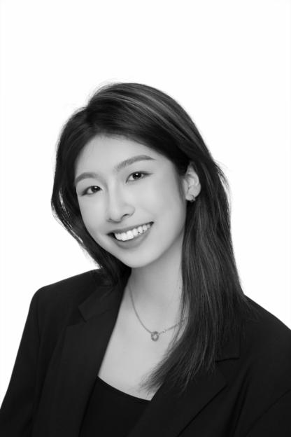
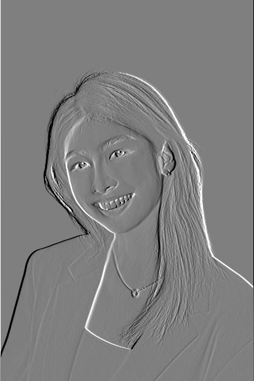
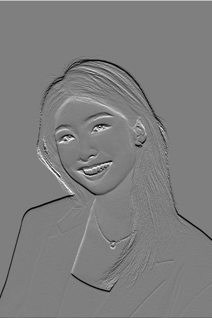
Part 1.2: Finite difference operator
In this section, I worked with the cameraman image and used the finite difference as the filter in the x and y direction.
To get the partial derivative in x and y of the cameraman image, I converted the image to grayscale and convolved it with the Dx and Dy filters (Dx = [1, 0, -1], Dy = [1, 0, -1]T).
Then I computed the gradient magnitude image using the formula sqrt(gx² + gy²).
Lastly, I experimented with a few values and chose a threshold of 0.24 to binarize the gradient magnitude image.
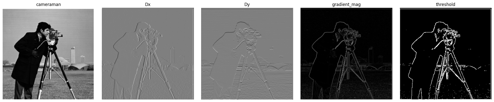
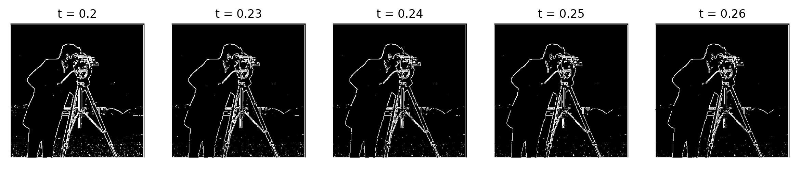
Threshold justification: A lower threshold keeps minor details such as grass and sensor noise; higher thresholds cut off parts of the tripod and coat outline. I chose 0.24 because it kept major shapes like the cameraman and camera without completely erasing the minor details.
Part 1.3: Derivative of Gaussian (DoG) Filter
In order to fully remove the noise in the image, we can blur the image using a low-pass filter and then repeat the steps we took to get the updated Dx, Dy, and gradient magnitude images.
I created a 1D gaussian kernel from cv2.getGaussianKernel with sigma = 2, size 13, 2D kernel from the outer product with its transpose.
DoG filters are G * Dx and G * Dy.
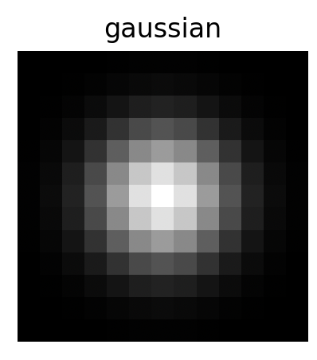
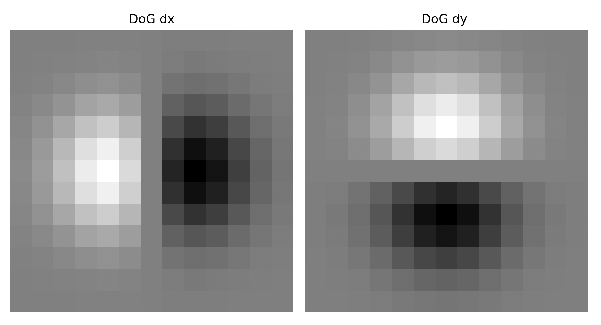
After convolving the gaussian with the cameraman, these are the results I got:
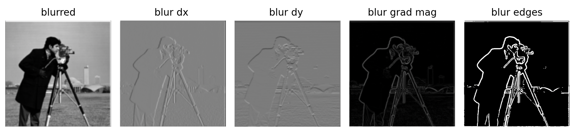
We can achieve the same results by applying one filter instead of two by using the derivative of the gaussian filter. To do so, I convolved the gaussian with Dx and Dy, then convolved the original cameraman picture with the DoG filters.

Comparison with finite differences: Overall, smoothing removes grass and speckle noise, and edges become thicker and smoother. Gradient magnitudes become smaller (gradient magnitude image after gaussian is darker) and so the threshold is lower (0.24 -> 0.08).
Part 2: Fun with Frequencies!
In this section, I constructed blending mechanisms to combine two images together seamlessly using high-pass and low-pass filters.
Part 2.1: Image "sharpening"
Recall that convolving an image with a gaussian filter will blur the image and lose its high frequency components like edges and fine details. In order to "sharpen" an image, we can subtract the "blurred" version of that image from itself to get the "sharpened" image, or the high frequencies.
I defined Sharpened = f + α (f − f*g) = f * [(1 + α) e − α g], where e is the unit impulse,
f is the original image, g is the gaussian, and α is the magnitude of sharpening. The blur f*g keeps low frequencies, so f − f*g isolates high frequencies, and adding α times them back strengthens edges and texture.
The kernel sums to 1, so flat regions are unchanged.
unsharp_filter = identity + alpha * identity - alpha * gaussian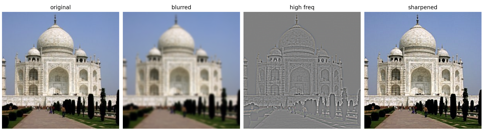
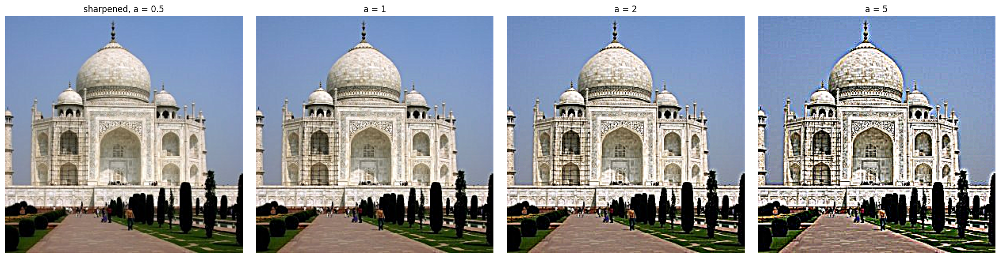
Observations: At large alphas, large halos appear and the edges have stronger contrasts.
Evaluation: sharp → blur → resharpen
Another image I chose is a picture of Casa Batllo by Gaudi in Barcelona that I took while in Spain, one of my favorite buildings. Below I've demonstrated the difference in blurring then sharpening on a sharp image for evaluation:

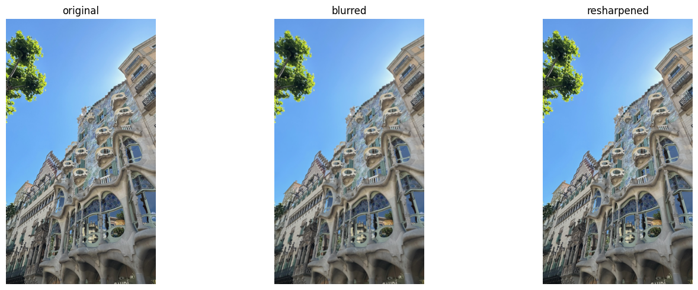
| αlpha | 0.5 | 1 | 1.5 | 2 | 3 | 4 |
|---|---|---|---|---|---|---|
| mean abs error vs original | 7.18 | 6.63 | 6.26 | 6.09 | 6.27 | 7.02 |
Blurred baseline: 7.89. Error is lowest near α ≈ 2 and never reaches 0, since blurring permanently removes high-frequency detail that unsharp masking cannot reconstruct.
Part 2.2: Hybrid images
Hybrid images are a combination of the low spacial frequencies of one image with the high spacial frequencies of another image. When looking at the hybrid image closely, you will see the fine high frequency details; however, once you distance yourself from the image, you will only see the low frequency image. For each input image, the cutoff frequency (sigma) was chosen experimentally: a low sigma for the high-frequency image leaves residual low-frequency content that causes ghosting; a high sigma for the low-frequency image destroys the distiguishable structures.
Derek + Nutmeg (full process)


Cutoff choice: high-pass σ1 = 4, low-pass σ2 =8. Larger σ means a lower cutoff; I tried several pairs and picked this one because this one keeps Derek's overall silhoette while nutmeg's structures aren't too dominating.
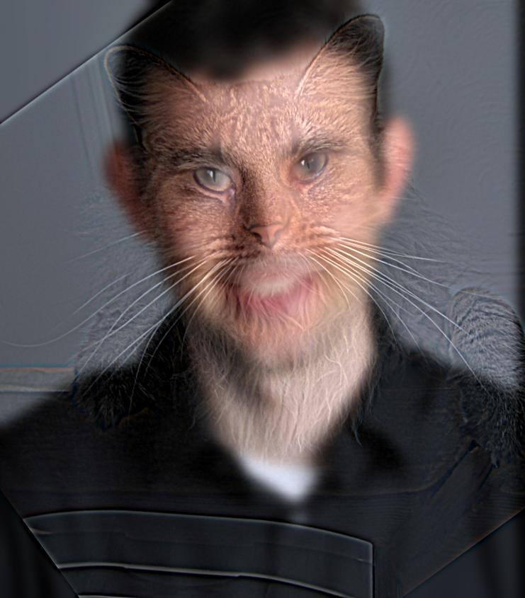
Smiski + Labubu

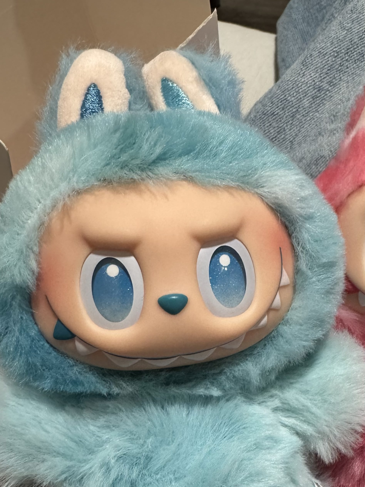
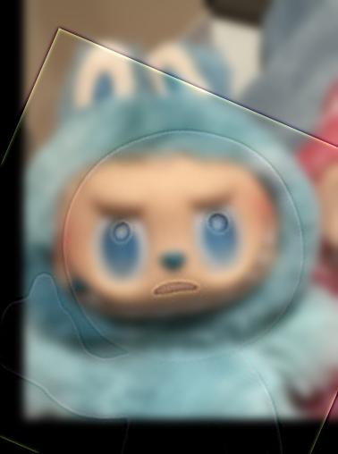
Third hybrid
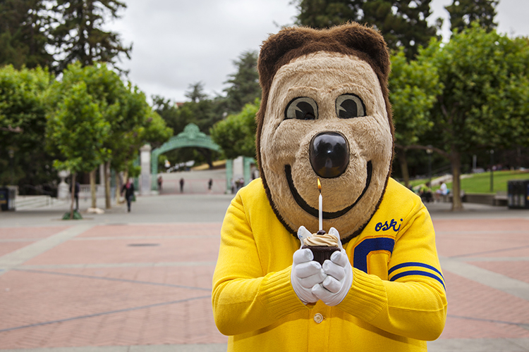
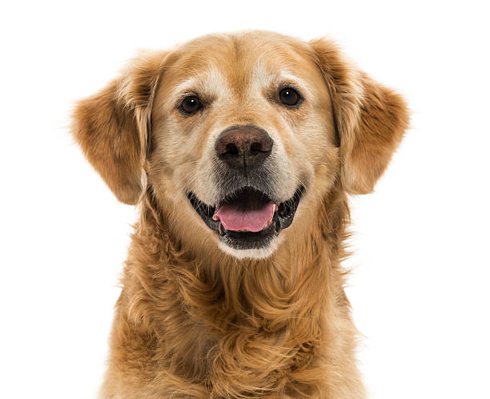
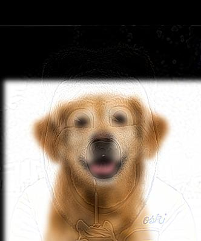
Notes / failures: I chose smiski to be the high frequency image because it has a simpler sihloette and failed a few times because smiski and labubu do not have a similar face shape and the hybrid didn't align. I fixed it by changing the size of smiski's face. For Oski and the dog, I chose a golden retriever because I like goldens, and I saw Oski the other day so I wanted to see what the combination is like. It is not the best combination but I thought it was cool.
Parts 2.3 and 2.4: Stacks and Multiresolution Blending
Part 2.3: Gaussian and Laplacian stacks
Instead of a pyramid, we use stacks, without downsampling, keeping each image at the original resolution. Level i of the Gaussian stack blurs the original with σ·2i−1 (σ = 2, 5 levels), using a separable Gaussian for speed. The Laplacian stack stores differences of adjacent Gaussian levels plus the final blurred image, so its levels sum to the original.
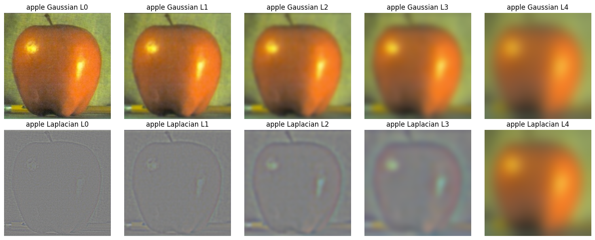
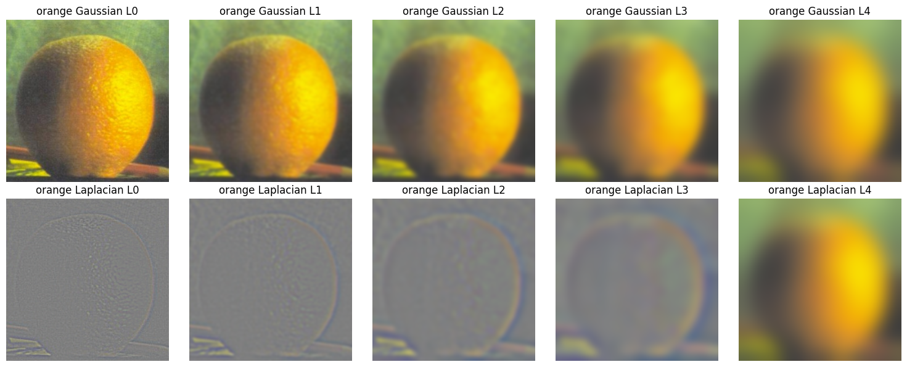
Part 2.4: Multiresolution blending
Each level is blended with its own mask: Σ mask_i · LA,i + (1 − mask_i) · LB,i, where mask_i is the Gaussian stack of the mask. Fine detail switches sharply at the seam while low frequencies transition gradually.
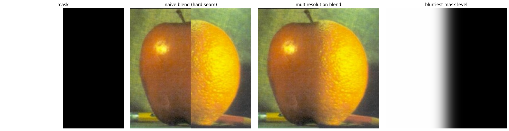
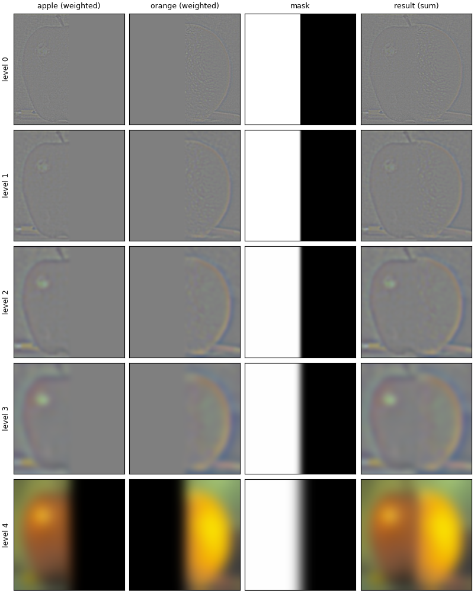
Custom blend 1 (irregular mask, flower): Royal Palace of Madrid inside Lake Tahoe
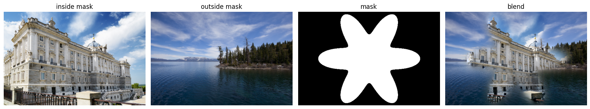
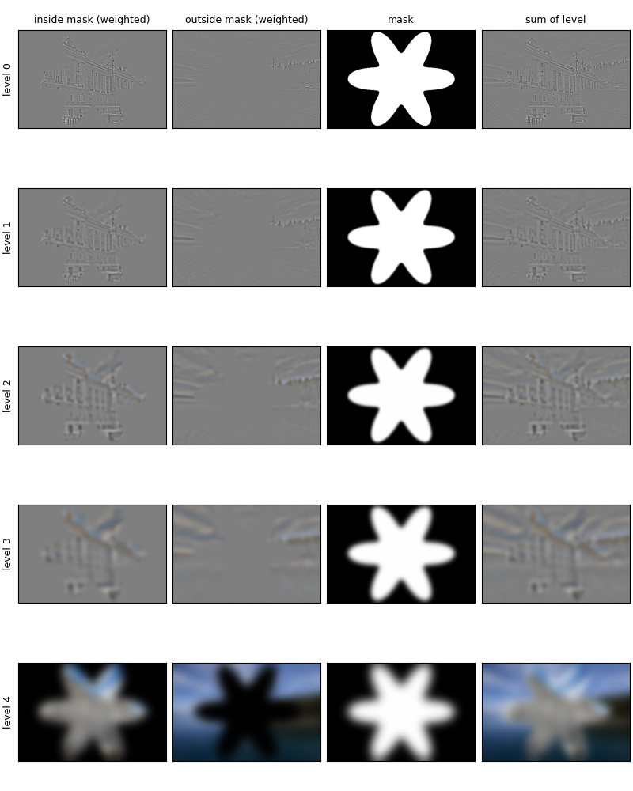
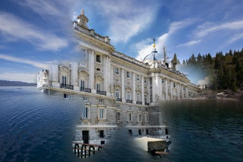
Custom blend 2 (irregular mask, circle): Froakie inside Greninja
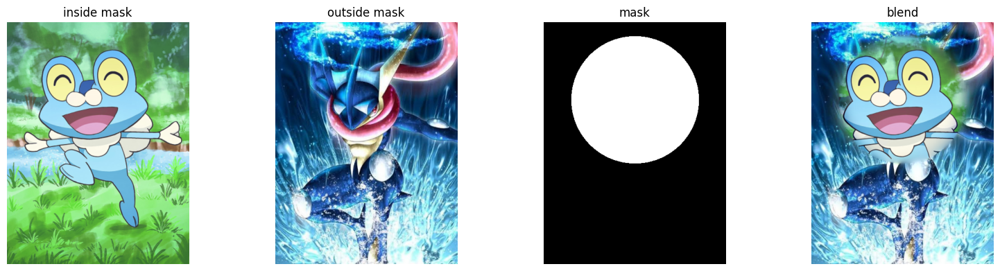
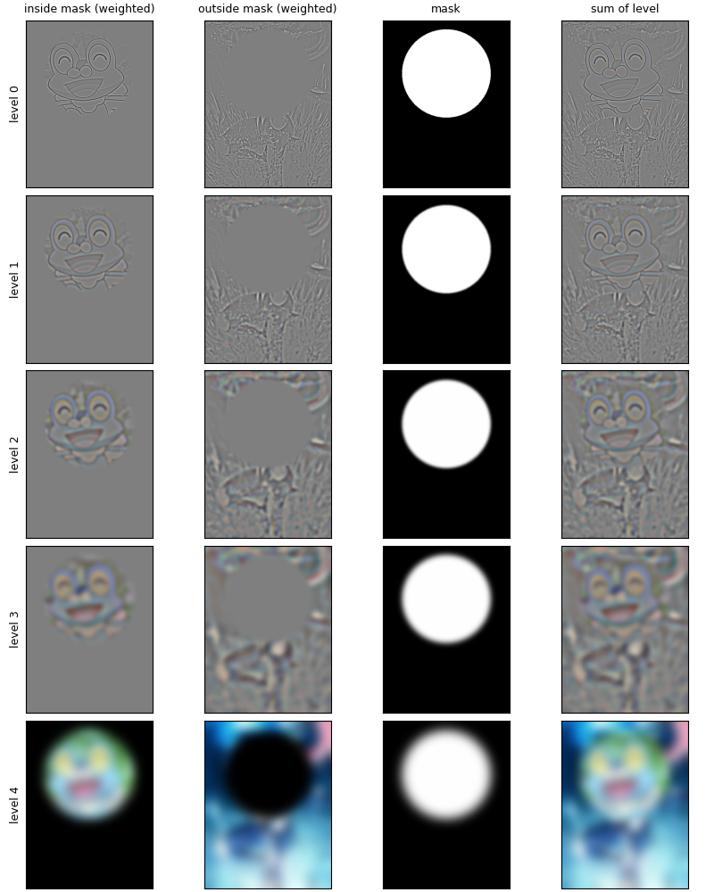
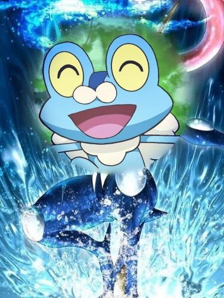
Thoughts: My first attempt used color-threshold masks from the character images, which left holes in white and black regions, so I switched to geometric masks. I then tried to change the ordering of the pictures, since tahoe inside madrid looked weird. I also experimented with different types of masks, ended up using the circle mask since it was the most straightforward one to implement and fit froakie's head pretty well.
The Most Important Thing I Learned
The most important thing I learned from this project was definitely how an image represented as a sum of frequency bands, and how to correctly think of each filter and convolution in a 2D way. I also did not know the importance of blurring an image before taking the dx and dy differences, and saw a big difference in how important the gaussian filter is. Moreover, I got to experiment with different hybrid images and I learned how important it is to read documentation because each numpy method works with different sizes and it was very hard to debug when I had the shapes wrong for several images and filters. I also learned the importance of starting early and not procrastinating from this project. It was a fun yet long project to work on.